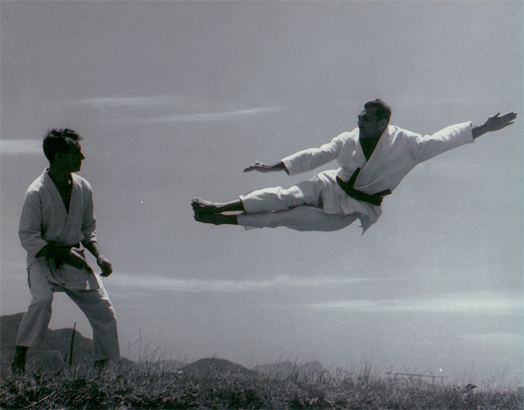

Geo Omori opened the first jiu-jitsu / judo school in Brazil in 1909. He would go on to teach a number of individuals including Luiz França. Later, Mitsuyo Maeda was one of five of the Kodokan's top groundwork (newaza) experts that judo's founder Kano Jigoro sent overseas to demonstrate and spread his art to the world. Maeda had trained first in sumo as a teenager, and after the interest generated by stories about the success of Kodokan Judo at contests with other jujutsu schools that were occurring at the time, became a student of Jigoro Kano Maeda left Japan in 1904 and visited a number of countries giving "jiu-do" demonstrations and accepting challenges from wrestlers, boxers, savate fighters and various other martial artists before eventually arriving in Brazil on November 14, 1914.
Gastão Gracie was a business partner of the American Circus in Belém. In 1916, Italian Argentine circus Queirolo Brothers staged shows there and presented Maeda. In 1917 Carlos Gracie, the eldest son of Gastão Gracie, watched a demonstration by Maeda at the Da Paz Theatre and decided to learn judo. Maeda accepted Carlos as a student and Carlos learned for a few years, eventually passing his knowledge on to his brothers. Sibling Hélio Gracie gradually further developed Gracie Jiu Jitsu as a softer, pragmatic adaptation from judo that focused on ground fighting, as he was unable to perform many judo moves that require direct opposition to an opponent's strength

Although the Gracie family is typically synonymous with BJJ, another prominent lineage started from Maeda via another Brazilian disciple, Luiz França. This lineage had been represented particularly by Oswaldo Fadda. Fadda and his students were famous for influential use of footlocks and the lineage still survives through Fadda's links with today's teams such as Nova União and Grappling Fight Team.
"Jiu-Jitsu" is an older romanization that was the original spelling of the art in the West, and it is still in common use, whereas the modern Hepburn romanization is "jūjutsu". When Maeda left Japan, judo was still often referred to as "Kano jiu-jitsu", or, even more generically, simply as jiu-jitsu.[16][17] Higashi, the co-author of "Kano Jiu-Jitsu" wrote in the foreword:
Some confusion has arisen over the employment of the term 'jiudo'. To make the matter clear I will state that jiudo is the term selected by Professor Kano as describing his system more accurately than jiu-jitsu does. Professor Kano is one of the leading educators of Japan, and it is natural that he should cast about for the technical word that would most accurately describe his system. But the Japanese people generally still cling to the more popular nomenclature and call it jiu-jitsu.
Outside Japan, however, this distinction was noted even less. Thus, when Maeda and Satake arrived in Brazil in 1914, every newspaper announced their art as being "jiu-jitsu" despite both men being Kodokan judoka.
It was not until 1925 that the Japanese government itself officially mandated that the correct name for the martial art taught in the Japanese public schools should be "judo" rather than "jujutsu".[18] In Brazil, the art is still called "jiu-jitsu". When the Gracies went to the United States to spread their art, they used the terms "Brazilian jiu-jitsu" and "Gracie Jiu-Jitsu" to differentiate from the already present styles using similar-sounding names. In a 1994 interview with Yoshinori Nishi, Hélio Gracie said, that he didn´t even know the word of judo itself, until the sport came in the 1950s to Brazil, because he heard that Mitsuyo Maeda called his style "jiu-jitsu".
The art is sometimes referred to as Gracie Jiu-Jitsu (GJJ), this name was trademarked by Rorion Gracie, but after a legal dispute with his cousin Carley Gracie, his trademark to the name was voided.[19] Other members of the Gracie family often call their style by personalized names, such as Charles Gracie Jiu-Jitsu or Renzo Gracie Jiu-Jitsu, and similarly, the Machado family call their style Machado Jiu-Jitsu (MJJ). While each style and its instructors have their own unique aspects, they are all basic variations of Brazilian jiu-jitsu. Today there are four major branches of BJJ from Brazil: Gracie Humaita, Gracie Barra, Carlson Gracie Jiu-Jitsu and Alliance Jiu Jitsu. Each branch can trace its roots back to Mitsuyo Maeda via the Gracie family or Oswaldo Fadda.